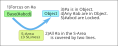
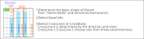
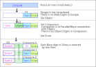
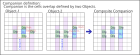
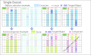
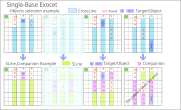
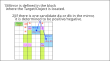
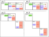

Exocet
Exocet is an algorithm that combines constraints such as house, companion, and coverline.
Here is an explanation of how Exocet works.
The following explanation assumes that you are familiar with the terms and definitions of Exocet.
If you are unfamiliar with them, please refer to Junior Exocet.
(0) ExocetのLocked
Exocet is an algorithm by Locked.
- 1) Base has Base Digits.
- 2) In the S-Area determined by the Base, Object, and Companion,
there are restrictions on the placement of Base Digits. - 3) The two Objects have "Base Digits."

(1) Exocet Framework
First, set the framework.
- 1) Base has 3 to 4 Base Digits.
- 2) Select three CrossLines from Base, direction and Band.

(2) Deriving the elements of Exocet
This shows the steps(1-2-3) for assembling the elements of Exocet, which creates the relationships and functions of each element.

- 1) Focus on one CrossLine(CL) and place an Object on the CL except for Escape.
The Object must contain Base Digits. - 2) Companion is defined on the CrossLine at any point other than Object or Escape as shown
in the following figure. Companion does not contain a Base Digit.

- 3) SLine is the area of CrossLine excluding Escape, Object and Companion.
Base Digits are in SLine and Object, but not in Escape and Companion. - 4) The Base Digits in the S-Area(three SLines) are each covered by two lines.
- 5) If there are not enough instances of BaseDigits in the S-Area,
then the instances are in Object.
Companion and Object are defined as a relationship in which only one of them has a Base Digits.
Companions do not contain Base Digits, so it is guaranteed that "objects have Base Digits".
Also, since it is linked to the Companion of the paired Object via the S-Area,
the Object has a Base Digit.
(3) Conditions for Exocet candidate Digits
When the following R1-R4 are met, the Base digits is in the Target/Object.
| R1 | The base cells (B1, B2) are both undetermined cells, contain the same numbers, and the number of Base's is 3 or 4 (#abc/#abcd). |
| R2 | Both the Target and Object are undetermined cells and together have two or more Base digitss. |
| R3 | Companion cells do not contain a Base digits. |
| R4 | For two or more digits in Base, the Base digits of "Problem, Solved, Candidate" in the S domain {SLine-0, SLine-1, SLine-2} are covered by two Cover-Lines. |
These conditions will now be explained in more detail.
| R1 | If the number of base digits is 2, it is a LockedSet.
If it is 5 or more, it is predicted that there will be more constraints and it is probably not possible to have any.
Therefore, R1 is a "the number of base digits between 3 and 4". Perhaps will expand. Sometimes the base cells do not have a common digitt. |
| R2 | Candidate digits other than the Base Digits may be included Contains a number of Base Digits equal to or greater than the number of cells in the Object. |
| R3 | Companion cells can be either fixed or unfixed. The absence of a Base digits in the Companion implies that the Object has a Base digits. |
| R4 | If the S area is "confirmed, resolved", it can be interpreted as either "Parallel/Cross Cover Line". (Hereafter, this will be referred to as "Parallel") |
(5) Exocet logic ... Proof of Locked
Base digits that satisfy R1 to R4 are Locked.
When any two digits are selected from the Base candidate digits, the following proposition holds for these two digits.
Proposition: If it is positive in Base, it is also positive in Object1 and Object2.
| L1 | In the Base cell, the base digits #ab is positive. |
| L2 | In the S area (SLine-0, SLine-1, SLine-2), there are three instances of #ab each (according to the rules of Sudoku), for a total of six instances. |
| L3 | From R3, there is no instance of #ab in Companion. |
| L4 | From R4, there are two #a CoverLines and two #b CoverLines in the S region {SLine-0, SLine-1, SLine-2}. |
| L5 | Since "6-4=2", the #a and #b instances are in Object1 and Object2, respectively. (#a and #b cannot exist in the same Object at the same time. It is not certain which is which.) |
Some comments to help you understand how Exocet works:
In the logic of Exocet, the way in which the Object-Companion-SLine are defined plays an important role.
By the definition of Companion, each CrossLine has an instance in only one of Object and SLine.
Extended Exocet
(1) Single Exocet
A Single Exocet is a case where one of the Objects "cannot have a Base digits" = "confirmed cell(s)".
The Base cell, Base digits, and CrossLine settings are the same as the standard Exocet.
The following figure is an example. One Object is a fixed cells, and the shape of the SLine and Companion at that time.
Whether these patterns actually exist remains to be seen.
The rightmost pattern is an invalid pattern in which no candidate digits can be placed.
The Object and Companion settings are the same as in a standard Exocet.

- Conditions for Single Exocet
- 1) Among the Base digits, one candidate digits has three CoverLines in the S region (this is called "wildcard").
- 2) Base digits other than the wildcard cover the S region with two CoverLines.
- 3) In a normal Object, all Bases, including the wildcard, are candidates (other digits may also be included.
- Results of Single Exocet
- 1) In the Base, the wildcard is positive.
- 2) In a normal Object, the wildcard is positive.
- 3) In a cell that connects the Base and a normal Object, the candidate number wildcard is negative.
(2) Single-Base Exocet
Single-Base Exocet is a case where the Base of a Single Exocet is 1 cell.

Additional Information (for understanding Exocet)
Mirror
Exocet Mirror has different functions and roles from other components.
Mirror is not involved in the establishment of Exocet Locked.
Mirror is defined when Exocet-Locked is established, and exclusion by Mirror occurs.
| M1 | Conditions for Mirror to work When the Exocet Locked is established and the Base candidate digits are determined to be two, exclusion by MIrror is possible. It is not determined which of the two candidate digits is in which Target/Object. |
| M2 | Candidate digits included in Mirror/Candidate digits not included Mirror is defined for each block that has a Target/Object. Mirror1 of Object1 is in Block2. Mirror2 of Object2 is in Block1.  |
| M3 | Mirror Shape If Target1 and Target2 are in the same Band, the connected House of Target1 and Block2 will overlap, and the overlapping part will be excluded from the definition of Mirror1. The same applies to Mirror2. In JE2(ex.1,ex.2), the Target is in the Base Band, and Escape is also excluded. Note that in Object, connected Houses are not excluded. If the Target and Block are not connected, there is no exclusion in the Mirror definition (ex.3,ex.4).  |
| M4 | Mirror Exclusion 1) Base digits that are not true in the Mirror are false in that Object cell. 2) When one cell in the Mirror contains only non-Base digits, the other cell is limited to the Base digits of the paired Object. 3) If the Mirror contains only one non-Base digits, it is true and false in cells where it is visible. 4) If the Mirror contains a Locked digits, digits of the same type (Base digits/non-Base digits) in the Mirror are false. |
[TD] ... Adding real samples ...